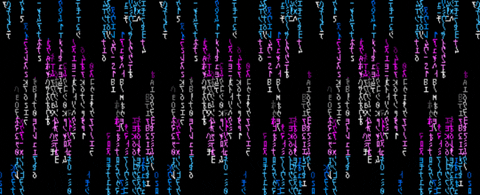

Portafolio de desarrollo frontend
Diseño experiencias digitales que funcionan.
Hola soy JohanXT, desarrollador frontend autodidacta. Convierto ideas y problemas reales en productos web claros, rápidos y accesibles.
Colección en crecimiento
Proyectos: /Acabados y en /Desarrollo

Esta es mi selección de proyectos creados desde cero, documentados y construidos para aprender haciendo.
Detrás del código
Aprender. Construir. Mejorar.
Como desarrollador autodidacta, convierto la curiosidad en aprendizaje y el aprendizaje en proyectos reales, funcionales y cada vez más ambiciosos.
- Progreso
- 0/10 proyectos terminados
- Proyectos previstos
- 10+ soluciones profesionales
- Aprendizaje práctico
- 100% construcción y documentación
- Idiomas
-
- Español — nativo y fluido
- Portugués — avanzado y fluido
- Inglés — en aprendizaje
- Tecnologías
- Enfoque profesional
-
- Mobile First
- Diseño responsive
- Accesibilidad
- SEO y rendimiento